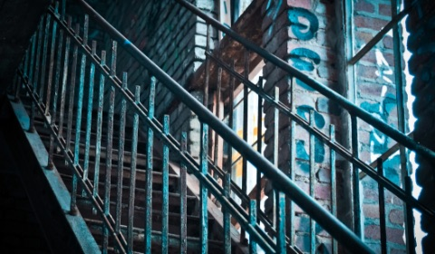

8月の探訪
-

北海道を旅行するのに最適な季節は8月をおいて他にない。 トウモロコシ畑はいよいよ隆盛を極め、今正にその旬を謳歌しようとしている。
そんな黄色の恵みを背に帯広から十数キロ北に車を走らせたところ、その場所は見えてきた。
一面に広がる緑には、おおよそ商業的農業としての役割を全うしているであろう空間は1ヘクタールも見つからない。
広大な庭の持ち主と、その隙間から覗く青空が伝える「夏」という言葉の解釈は、きっとまだどの辞書にも載っていないだろう。 -

友人の誘いで訪れた印刷工場跡で見た階段はところどころ腐食が進んでおり、歩みを進めるたびにそう長くないであろう踏み板の寿命を感じさせる。
こういった場所に来るたびに懐かしい感覚を覚えてしまうのはなぜだろう。手すりを掴んだ左手から香る酸化鉄は、逆上がりができずに半べそをかいていた時分を思い出させた。 -

長めに取った夏季休暇もいよいよ終わりに近づく某日、せっかく軽井沢に来ているのだからと、少し足を伸ばして翡翠峠に訪れた。
眼前に広がる一本道は、トンネルを抜けて感じた温度差も相まっていっそう胃のあたりをざわつかせる。 長らく手入れされていないであろう道だが、思った以上に歩みを阻む草が少ない理由に想像を巡らせ、一人笑みが溢れる。
年を取るにつれ失うものは多くあれど、廃線を歩くという高揚感は、皆いくつになっても消えないらしい。